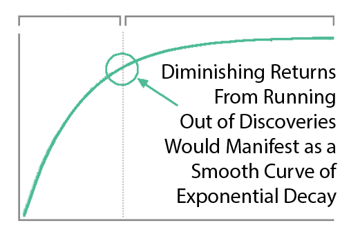

The Health Explosion
The average lifespan was around 28 years for thousands of years. The first modern medical schools that applied modern statistical methods to research were founded around 1800. This is when the first vaccines were developed and tested. This was also the first time in recorded history that lifespan began to consistently increase. Then around 1900
The U.S. Pharmacopoeia
At the turn of the twentieth century, pharmacy was a young and immature science. Most drugs were still created by hand in a local pharmacy. Technologies to assess and create uniformity in drugs often did not exist. Indeed, a major task of nineteenth- and early twentieth-century pharmacy was to define what a drug was and to create standards of composition, purity, and strength. Pioneering efforts in this direction had begun in 1820 with the creation of the U.S. Pharmacopoeia (USP) . A private, voluntary undertaking of physicians, pharmacists and colleges of pharmacy, the USP presented a formulary of compositions and listed chemical compounds, crude drugs, fixed oils, and other substances typically kept by a pharmacist (then called a pharmaceutist or an apothecary). Later the USP listed tests for determining purity. Leading pharmacists regularly revised the USP as new and better drugs, compositions, and tests were discovered and created.
The American Medical Association
Medical men interested in advancing their crafts and the dignity of their professions formed themselves into state medical societies and pharmaceutical associations, the American Medical Association (AMA, 1848), and the American Pharmaceutical Association (APA, 1852). The major societies and associations often published journals, collaborated with medical schools, and sometimes maintained committees on drug adulteration to check drug samples and to publicize information.
The National Formulary
Pharmacists compiled the National Formulary , first published by the APA in 1888. The Formulary has functioned since 1896 to provide standards for drugs omitted from the USP and to serve as a proving ground for drugs eventually transferred to the USP. (On the earlier history of the USP and National Formulary see Sonnedecker 1970 .)
But before the twentieth century there was no direct federal regulation of drugs or other consumer products. In 1848, Congress forbade the importation of adulterated drugs, but the law quickly became moribund, as the drug examiners were usually untrained political spoilsmen ( Young 1970, 151 ). The Reconstruction years saw the formation of the U.S. Department of Agriculture Bureau of Chemistry, the predecessor of the FDA. Consisting of only a few men, the bureau did little more than request customs inspections of imported foods and to a lesser extent drugs. In 1883, the bureau got a righteous and rambunctious chief in Harvey Washington Wiley, who campaigned for federal laws.
The End of the Health Explosion
Like most Americans, you likely take comfort in knowing that drugs marketed in the United States are available to the public because clinical research studies have demonstrated they are not only safe, but also actually effective at treating the indicated condition. You may not have known this, but you have the Kefauver-Harris Amendment to thank for this luxury.
From 1938 until 1962 when the amendment was passed, there was no requirement for drug manufacturers to demonstrate they actually worked. Manufacturers of drugs could market their products in the United States solely by demonstrating they were safe for humans.
The Drug Efficacy Amendment, this amendment was signed into law in 1962 also required manufacturers to provide proof of effectiveness of their drugs prior to approval.
The primary reason the amendment was passed in the United States was due to the Thalidomide Tragedy that occurred in Europe. The drug thalidomide became available over-the-counter in Germany starting in 1957. By 1960, it was marketed in 46 countries (but not the US) to treat nausea associated with morning sickness during pregnancy. Unfortunately, the potential side effects for using it this way were not fully understood. As a result, thousands of children were born with birth defects, most notably phocomelia (limb malformations). Eventually, it ceased to be used to treat pregnant woman, but not until after an estimated 2,000 child deaths and over 10,000 cases of birth defects were noted. Despite this occurring in Europe, the United States took notice and sought to tighten our regulatory approval process of new drugs. The Kefauver-Harris Drug Amendment is the primary means by which this occurred.
To this day, new drugs, and now also new medical devices, must be proven safe and effective before FDA will approve them for use with humans.
The Thalidomide disaster occurred in the 50's producing many flipper babies and scaring the hell out of everyone.
Prior to this, putting drugs on the market required a few years of safety testing on animals. Then they were made available and efficacy trials were basically crowd-sourced for free. Case studies from patients were compiled and published by the American Medical Association etc. Often unanticipated benefits of drugs are unknown until people started using them.
FDA Restrictions Dramatically Expanded in 1962
Following the Thalidomide disaster, the FDA began requiring 3 phases of clinical trials that spanned many years to slow down the availability and make sure they caught any major side effects (like flippers) before the drugs were approved.
Kefauver–Harris Amendments to the Federal Food, Drug, and Cosmetic Act
The amendments granted the FDA the power to demand proof of efficacy before approving a drug. These powers were also tied to the orderly sequence of phase 1, phase 2, and phase 3 trials now comprising the standard pharmaceutical life cycle.
Delayed Life-Saving Treatments
One unanticipated consequence of the amendments was that the new burden of proof made the process of drug development both more expensive and much longer, leading to increasing drug prices and a “drug lag”. After that point, whenever they released some new cancer or heart medication that was going to save 50,000 lives a year, it meant that over the previous 10 years of trials 500,000 people died because they didn't have access to the drug earlier.
Fewer Life-Saving Treatments
Another unanticipated consequence of the amendments was that the new burden of proof made drug development much more expensive and riskier for investors. This lead to and increase drug prices.
Increase in Patent Monopoly
Industry agitation surrounding the “drug lag” finally led to modification of the drug patenting system in the Drug Price Competition and Patent Term Restoration Act of 1984. This further extended of drug patents. Thus Kefauver's amendments ultimately affected both pharmaceutical pricing and patenting — in a manner diametrically opposed to the one he intended.
Decreased Ability to Determine Comparative Efficacy
Another unintended consequence of the amendments was that the new structures of proof changed not only the behavior of the pharmaceutical industry, but also the conceptual categories used by biomedical researchers around the world. Pharmaceutical research came to be overwhelmingly organized around the placebo-controlled, randomized controlled trial. Although this system has greatly helped researchers gauge the efficacy of an individual drug, it has also rendered data on comparative efficacy much more difficult — and much more expensive — to find or produce.
Recent Efforts at Comparing Efficacy
Only in the past decade, through the action of the Reforming States Group, the Drug Effectiveness Research Program, and most recently funding of comparative effectiveness research through the American Recovery and Reinvestment Act, the Affordable Care Act, and now the Patient-Centered Outcomes Research Institute, have we begun to catch up on the vital project of comparing therapeutics so that American consumers and their physicians can make meaningful treatment decisions — the project that motivated Kefauver's original investigations a half-century ago.
Growth In Lifespan Was Cut in Half
As a result of the slowed pace of the development of new life-saving treatments, the annual increase in human lifespan was cut in half from it's previous 4 year increase down to 2 years per decade.
FDA Mandate is Not to Maximize Lives Saved
Increasing lifespan is not the congressional mandate of the FDA. Its mandate is to ensure the "safety and efficacy of drugs and medical devices". It has been very successful at fulfilling its mandate.
However, if you reduce the speed limit to 1 mile per hour, it will be much safer for everyone and you could reduce traffic fatalities by 40k per year. However, there is an economic and societal cost to only moving 1 mph that would likely exceed the safety benefit. Likewise, if you dramatically slow the development of life-saving treatments, you will avoid the risk of flipper babies. But lots of people with AIDS and cancer will die while waiting for treatment.
Cognitive Bias Against Acts of Commission
Humans have a cognitive bias towards weighting harmful acts of commission to be worse than acts of omission even if the act of omission causes greater harm. It's seen in the trolley problem where people generally aren't willing to push a fat man in front of a train to save a family even though more lives would be saved.
High Cost of Development Favors Monopoly and Punishes Innovation
There's another problem with increasing costs of treatment development. In the past, a genius scientist could come up with a treatment, raise a few million dollars and do safety testing. Now that it costs a billion dollars to get a drug to market, the scientist has to persuade one of a few giant drug companies that can afford it to buy his patent. Then the drug company has 2 options:
Option 1: Risk $1 billion on clinical trials
Possibility A: Drug turns out to be one of the 90% the FDA rejects. GIVE BANKER A BILLION DOLLARS. DO NOT PASS GO.
Possibility B: Drug turns out to be one of the 10%, the FDA approves. Yay!!! Now it's time to try to recover that billion dollars. However, there are very few drug companies with enough money to survive this game. So, this company almost certainly already has an existing crappier drug on the market to treat the same condition. Hence, any profit they make from this drug will likely be subtracting from revenue from other drugs they've already spent a billion dollars on.
Option 2: Put the patent on the shelf
Do not take a 90% chance of wasting a billion dollars on failed trials. Do not risk making your already approved cash-cow drugs obsolete.
What's the benefit of bringing better treatment to market if you're just going to lose a billion dollars? Either way, the profit incentive is entirely in favor of just buying better treatments and shelving them.
Cures Are Far Less Profitable Than Lifetime Treatments
Imagine you had to pay a lifetime of power bills all at once And that's just if the new drug is a lifelong treatment. If the new treatment is a permanent cure for the disease, replacing a lifetime of refills with a one time purchase would be economically disastrous. How is there any financial incentive for medical progress at all?
Fortunately, we don't have a complete monopoly on treatment development. However, the more expensive it is, the fewer participants can afford to be in that business. So it inevitably becomes more monopolistic and there arise more of these situations where the cost of trials exceeds the profits from selling the drug.
People With Rare Disease are Particularly Screwed
In the case of rare diseases, increasing the cost of treatment development to over a billion makes it impossible to recover your investment from a small number of patients. So rare disease patients are suffer the greatest harm from the added regulatory burden on development.
People With Rare Disease are Particularly Screwed
How high should the cost of drug development be on our list of human problems? Well, when something costs more, you get less of it. For people who are dying of cancer, the fact that we couldn't afford enough research to cure them is definitely at the top of their list of human problems.
Correlation is Not Causation
You might say "I don't know how much the FDA contributes to or hampers public health. I do know that correlation does not necessarily imply causation." However, a correlation plus a logical mechanism of action is the least bad method we have for inferring the most likely significant causal factor for an outcome (i.e. life expectancy). Assuming most likely causality based on temporal correlation is the entire basis of a clinical research study and the scientific method generally.
Diminishing Returns?
You might say "It seems more likely -- or as likely -- to me that drug development provides diminishing returns to life expectancy." However, diminishing returns produce a slope of exponential decay. It may be partially responsible, but it's not going to produce a sudden change in the linear slope of a curve a linear as life expectancy was before and after the FDA.
Additionally, we're only 3 lifetimes from George Washington. The modern scientific method has only been systematically applied to medicine for like .0001% of human history. However, the more clinical research studies I read, the more I realize we don't know. We know basically nothing at this point compared to what will eventually be known about the human body. And the currently highly restrictive overly cautious method of clinical research prevents us from knowing more faster. We're at the very beginning of thousands or millions of years of systematic discovery. So it's unlikely that this decline in lifespan growth is the result of diminishing returns due to our running out of things to discover.
It Costs $2837 in Pharmaceutical Spending to Save 1 Year of Life
The estimates imply that, if no new drugs had been launched after 1981, YLL85 in 2013 would have been 2.16 times as high as it actually was. We estimated that pharmaceutical expenditure per life-year saved before age 85 y in 2013 by post-1981 drugs was $2837. This amount is about 8% of per capita GDP, indicating that post-1981 drugs launched were very cost-effective overall. But the fact that an intervention is cost-effective does not necessarily mean that it is ‘affordable.’ - https://academic.oup.com/inthealth/article/11/5/403/5420236
Measuring the Impact of Innovative Medicines on Life Expectancy

New Cancer Therapies: More Survivors

Growth in Average Lifespan Has Now Completely Stopped
The strongest contributing factor for this has been the explosion in cost of treatment development. The biggest driver of this phenomenal increase has been the regulatory process governing Phase III clinical trials of new pharmaceuticals on human volunteers. One reason: Phase III clinical trials have become far larger and more complex than they were in the past.
From 1999 to 2005, the average
- length of a clinical trial increased 70%
- number of routine procedures per trial increased 65%
- clinical trial staff work burden increased 67%
On top of that, increasingly stringent enrollment criteria and trial protocols resulted in
- 21 percent fewer volunteers being admitted into trials
- 30 percent more enrollees dropping out before completion of the tests.
How Many People Have Died Prematurely Due to Prevented Treatments?
Deaths owing to drug lag have been numbered in the hundreds of thousands. Wardell (1978a) estimated that practolol, a drug in the beta-blocking family, could save ten thousand lives a year if allowed in the United States. Although the FDA allowed a first beta-blocker, propranolol, in 1968, three years after that drug had been available in Europe, it waited until 1978 to allow the use of propranolol for the treatment of hypertension and angina pectoris, its most important indications. Despite clinical evidence as early as 1974, only in 1981 did the FDA allow a second beta-blocker, timolol, for prevention of a second heart attack. The agency’s withholding of beta-blockers was alone responsible for probably tens of thousands of deaths (on this general issue see Gieringer 1985 ; Kazman 1990 ).
A chief source of information about drug delay is the Tufts Center for the Study of Drug Development, a scholarly, not too outspoken research center funded chiefly by pharmaceutical companies. Their information is often mined by researchers at the Competitive Enterprise Institute (CEI) . The CEI has noted that in recent years thousands of patients have died because the FDA has delayed the arrival of new drugs and devices, including interleukin-2, taxotere, vasoseal, ancrod, glucophage, navelbine, lamictal, ethyol, photofrin, rilutek, citicoline, panorex, femara, prostar, omnicath, and transform. Prior to FDA approval, most of these drugs and devices had already been available in other countries for a year or longer.
Gieringer (1985) used data on drug disasters in countries with less-stringent drug regulations than the United States to create a ballpark estimate of the number of lives saved by the extra scrutiny induced by FDA requirements. He then computed a similar ballpark figure for the number of lives lost owing to drug delay:
[T]he benefits of FDA regulation relative to that in foreign countries could reasonably be put at some 5,000 casualties per decade or 10,000 per decade for worst-case scenarios. In comparison, it has been argued above that the cost of FDA delay can be estimated at anywhere from 21,000 to 120,000 lives per decade. . . . Given the uncertainties of the data, these results must be interpreted with caution, although it seems clear that the costs of regulation are substantial when compared to benefits. (196)
Note three things about the foregoing passage. (1) The comparison is between the FDA and the foreign systems of drug control. (2) The relative benefits of the FDA are expressed in number of casualties, whereas the relative costs are in number of lives. (3) In addressing the costs, Gieringer estimated the costs only from drug delay; he does not attempt to quantify the costs associated with drug loss. Nevertheless, his conclusion is clear: the FDA is responsible for more lives lost than lives saved.
Sources
- Google Spreadsheet of FDA Spending vs Life-Expectancy
- Summary of NDA Approvals & Receipts, 1938 to the present
- Theory, Evidence and Examples of FDA Harm
- DATA
- GDP
- Reform, Regulation, and Pharmaceuticals — The Kefauver–Harris Amendments at 50
- Consumer Price Index
- Estimates of World GDP, One Million B.C. – Present
- Newspaper Generator
- Report suggests drug-approval rate now just 1-in-10
- How many people die and how many are born each year?
- Gross World Product per capita
- History of Clinical Trials
- How many life-years have new drugs saved?
- CATO
- Medical Innovation
- Timeline History of Clinical Research